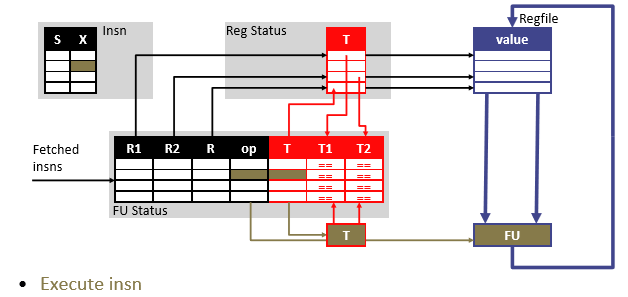

4 Out-of-Order - Dynamic Scheduling, Tomasulo
In-order pipeline is limited by IPC = 1 - an upper bound (“Flynn Bottleneck”)
For a pipeline with depth D stages, a superscalar machine of width N would lead to an instruction parallelism \(D \times N\) in the architecture. However, a simple in-order scaling to superscalar, CPI would be limited by dependency stalls once width increases beyond a certain point
Instruction-Level Parllelism is a measure of the amount of inter-dependencies between instructions
Average ILP = Number of Instructions / Number of Cycles
- ILP = 1 is the worst case (meaning each instruction has to be executed serially/sequentially). There is no upper limit to ILP
We now introduce two (somewhat) independent techniques (although frequently employed together):
- Dynamic scheduling (out-of-order processing)
- Register Renaming
Some advantages offered by dynamic scheduling (H&P Ch3.4):
- Allows code compiled for one pipeline to efficiently run on a different pipeline
- Handles cases where dependences are not known at compile time
- (Most importantly) Allows processor to tolerate unpredictable delays (e.g. cache misses) by executing other instructions while waiting for the long instruction to resolve
4.1 Dynamic Scheduling
A.k.a. Out-of-order processing
- Add new hardware: Instruction Buffer
- Aka instruction window, instruction scheduler
- Each cycle, HW checks if the sourceRegs for each instruction is ready to execute
- Instruction leaves buffer when ready (this can be in arbitrary order)
- This makes it “out-of-order” since instructions can be executed in arbitrary order
- To sum:
- Instructions going into the instruction buffer is same order as the program
- Instructions are sent to next stage as soon as its ready, thus:
- Instructions going out of instruction buffer can be in any order
- Instructions are committed in order

We now split the decode stage into a Dispatch stage and an Issue stage
4.1.1 New Hazards
Out-of-order introduces new types of hazards:
- Read-after-write (RAW) - “true dependencies” as we have seen before
- Write-after-read (WAR) - “Anti dependencies”
- Write-after-write (WAW) - “Output Dependencies”
WAR and WAW also called “Name” Hazards
- These dependencies are “false” dependencies, since their dependence is on name/register/location rather than data
- Given infinite registers, WAR/WAW could be eliminated
- This leads us to the register renaming technique
4.2 Register Renaming
Idea: to solve false dependencies, we increase the number of physical registers (not visible to the programmer, since architectural registers are defined by ISA)
- In hardware, dynamically rename instructions to use new physical registers
- Removes WAR and WAW but keeps RAW intact (because RAW is a true dependency)
A Map Table records the correspondence between architectural registers and physical registers
A Free List records physical registers that are free to use
- On reads: check map table to see which physical register to read from
- On writes: (within a certain distance that could cause a hazard), we update the map table with a physical register on the free list (eliminates name hazards)
4.3 Scoreboarding
- Out-of-order with no register renaming
- Uses a centralized control scheme - instruction status explicitly tracked
- Instruction buffer: Functional Unit Status Table (FUST)
4.3.1 Data Structures
- FU Status Table
- Tracks dest/source reg, which operation and whether FU is busy
- T: destination register tag (FU producing the value)
- T1, T2: source reg tag (FU producing the value)
- Each entry in the table represents a single FU
- Register Status Table
- T: Tag (FU that will write this register)
- Essentially tracking which FU’s instruction is going to write to this reg
4.4 Instruction Status Table
Tags track what FUs we are waiting on (0 for value alrady in RF, not 0 means value will be supplied by T)
4.4.1 Scoreboard Dispatch
- Since no register renaming, still have to worry about WAW
- If instruction is writing to a reg, tag it in reg status table
4.4.2 Scoreboard Issue
- Issue Policy - If multiple instructions are ready, which one do we choose?
- Oldest first? Safe choice
- Longest latency first? May yield better performance
- Select logic implements the issue policy
- Based on a W to 1 priority encoder
- W is the window size (number of scoreboard entries)
- Based on a W to 1 priority encoder
4.4.3 Scoreboard Execute

4.4.4 Scoreboard Writeback
- Since reg is written back, reg status of the destReg is cleared ()
- Writting back an instruction clears the corresponding input tags in FU Status
- Scoreboard (FU Status) entry is freed since the FU can take on a new instruction
4.4.5 Scoreboard Pipeline
- Pipeline: F, D, S, X, W
- Fetch
- Dispatch
- If structural or WAW hazard? stall
- Structural: All FUs busy
- WAW: curr_inst writes to regA but RegStatus[regA] is non-empty
- i.e. destination register is tagged in Reg Status table
- This means it is being written to by a current instruction
- Otherwise allocate scoreboard entry
- If structural or WAW hazard? stall
- Issue
- If RAW hazard? stall
- RAW: curr_inst reading regA but regA has pending results to be written
- Check with tags in FU status table (recall a reg is tagged if it is being written to)
- Otherwise read registers and issue to execute
- If RAW hazard? stall
- Execute
- Writeback
- If WAR hazard? stall
- WAR: instruction tries to write to a reg that has not been read yet
- Check if destReg matches any sourceReg that is untagged in scoreboard
- Untagged means it is reading the register’s content BEFORE this instruction should write to it (otherwise it would be tagged)
- Otherwise write register and free scoreboard entry
- If WAR hazard? stall
Adding register renaming would help us reduce stalls in D and S stages by eliminating name dependencies
4.4.6 Comparisons
- On branch: stall dispatch until branch completes
- Scoreboarding didn’t provide too much speedup
- Originally used for scientific computing (where programs have minimum branches)
- Scoreboarding is still used in GPUs
- Thousands of independent threads that can be switched to when one thread has a branch
- Not great for general purpose processing…
- Pros:
- Relatively cheap hardware (compared to more complex OoO)
- Cons
- Limited scheduling scope (due to structural and WAW hazards delaying dispatch)
- Slow issue of RAW
- WAR hazard delays writeback
- We introduce register renaming to advance to Tomasulo’s
4.5 Tomasulo’s Algorithm
- Out-of-order with register renaming
- Map table maps arch. reg. to phys. reg.
- On write: allocate new location (from free list of reg), note in map table
- On read: find the phys. reg. from map table
- Need to de-allocate mappings eventually
- Register renaming removes WAR/WAW hazards
Here we introduce a Simple Tomasulo
4.5.1 Data Structures
- Reservation Stations (RS) is the “instruction buffer”
- Stores FU, busy, opcode, destReg of instructions
- T: destination reg tag (RS# of this RS)
- T1, T2: source reg tags (RS$ of the RS That will produce the value used)
- V1, V2: source reg values
- Common Data Bus (CDB) - bus that broadcasts results to the RS
- Broadcasts <RS#,value> of the completed instruction
- Map Table
- Store the Tags (RS#) that will write to this register
Tags are the reservation station entry index, where 0 (empty) means the value is ready somewhere. Otherwise the value is not ready and is dependent on the corresponding RS# instruction to write to it, thus need to wait until CDB broadcasts the tag
4.5.2 Pipeline
- Dispatch:
- Structural hazard on FUs? Yes then stall, otherwise allocate RS entry
- If the operands are not in the registers, keep track of the functional units that will produce the operands (as tags). This step renames registers, eliminating WAR and WAW hazards
- Issue:
- Check for RAW hazards (same was as scoreboarding) by checking if the sourceReg has all their values ready. If source reg is tagged, wait until CDB broadcast
- If no RAW, then issue instruction for execution
- Writeback
- Write the register and free the RS entry
4.5.3 Tomasulo Dispatch
4.5.4 Tomasulo Issue
4.5.5 Tomasulo Execute
- Same as previous pipelines
4.5.6 Tomasulo Writeback
4.5.7 Tomasulo - Register Renaming
Differences with scoreboarding:
- Scoreboarding explicitly keeps track of the indices of the source registers (Tags)
- The basic idea is that a reservation station fetches and buffers an operand as soon as it is available, eliminating the need to get the operand from a register. When successive writes to a register overlap in execution, only the last one is actually used to update the register
- Data structures (Map table, values table in the RS that copies the reg values) are much larger than indices used in Scoreboarding, costing more hardware
What in Tomasulo implements register renaming?
- Value copies in the RS (V1, V2 in the value table)
- Instructions stores correct input values in its own RS entry
- Future instructions can overwrite master copy in the register file
- But for WAW/WAR hazards, the correct values are in the RS
- Thus, Tomasulo-style register renaming is “value-based”/“copy-based”
- Names: architectural registers
- Storage locations: register file and RS
- Values can exist in both
- RF holds most recent values
- Copies of values in the RS prevents WAR hazards
- Storage location referred to by the RS# tags
- Register table translates names to tags
- Empty tag -> value is in RF
- Tagged value means it is computed by the corresponding RS#
- CDB broadcast contains the tag, thus instructions knows if it is the correct value they want
Takeaway: Dynamic scheduling WITH register renaming shines in high latency instructions
- Problem with Simple Tomasulo: Cannot handle exceptions - we don’t know the relative ordering of instructions by looking at the RS
4.6 Quick Summary:
4.7 Looking Ahead
Next chapter discusses how we build on to handle precise state and speculation in P6 and R10k -style architectures
4.8 Example Executions
4.8.1 Scoreboard